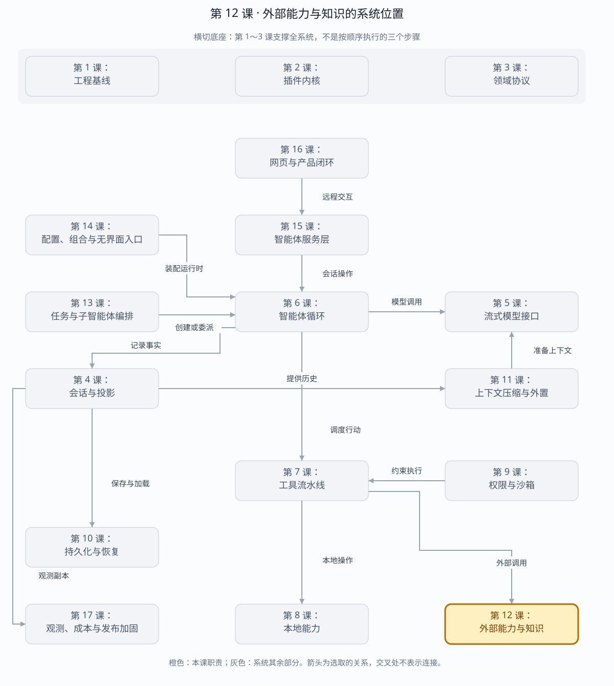

第 12 课：Skills、MCP、Web、LSP 与 Attachment
外部能力不是一锅“工具”：统一目录负责发现，各能力 seam 保留自己的选择、生命周期和信任边界，最后只有模型可调用操作桥接进 Tool Registry。
章节概览（可选）：三框架职责摘要
本章对比：DeepSeek Harness / DeepAgents / OpenHands
口径：DeepSeek 依据本地原仓库（99f6f02fecdb），不是 harness-lab；deepagent 按 LangChain DeepAgents 理解；OpenHands 对比当前 Software Agent SDK，不混用旧 V0。在线资料核对于 2026-08-28，描述文档能力，不代表已在本实验室安装或测试。没有依据的同名能力不强行等同。
三者的关键区别：对比重点是外部能力如何归一到工具或上下文接口，以及谁拥有连接、权限和结果解释。（基于上述依据的归纳）
本章在全系统中的位置
工具层与上下文层连接外部服务、技能和知识的扩展边界。
下面是本课程的概念地图，不是某框架的逐包调用图，也不表示实验室已默认装配全部能力。三套框架的实际对应关系见上方横向对比表。
全系统定位 · 橙色高亮第 12 课
打开大图 · Mermaid 图源
| 上游与输入 | 工具调用、任务需要的知识、外部能力配置。 |
|---|
| 下游与输出 | MCP 或其他服务结果、按需载入的技能内容，回到工具结果或模型上下文。 |
|---|
| 不归本章负责 | 外部服务返回内容是数据，不自动成为可信系统指令；远程连接也需要自己的凭据和生命周期。 |
|---|
| 放进具体场景 | 先载入代码审查技能，再调用外部检索工具；技能告诉如何做，工具负责获取事实，两者不混用。 |
|---|
接着看下方「可视化图解」：局部模块图解释职责，时序图解释一次调用，分支图解释异常与边界。
本课导览
| 包含内容 | 技能发现、MCP 工具桥接、网页搜索与抓取、LSP 语义查询和附件存储。 |
|---|
| 涉及模块 | CapabilityCatalog、SkillRegistry、McpBridge、WebRuntime、LspRuntime、附件仓库。 |
|---|
| 白话解释 | 统一菜单告诉智能体有哪些外部能力，但每种能力仍由自己的适配器和安全规则负责。 |
|---|
| 解决的问题 | 避免万能接口模糊生命周期和信任边界，并让外部能力可发现、可换代、可恢复且不泄露本地路径。 |
|---|
点击下面的概念名称，可直达该概念的三框架实现、区别与依据。原有能力清单、示例和验收描述面向 harness-lab 教学实现；不要将其直接当作上游框架能力声明。
完整能力清单
| 能力域 | 完整能力 | 边界 |
|---|
| 统一能力目录 | 登记技能、工具、网页搜索、网页抓取、LSP 和附件摘要；稳定排序并随释放撤销。 | 目录只负责发现，不吞并各协议运行时。 |
| 技能 | 扫描多优先级根目录，解析元数据，按名称选胜出者，区分模型调用与用户调用。 | 路径必须留在技能资源根目录内。 |
| MCP | 完整遍历工具分页，检测游标循环，生成服务器限定名，原子替换工具代次并转发原始名称。 | 发现失败时继续保留上一代工具。 |
| 网页搜索 | 注册多个提供方，按显式配置或唯一可用者选择，并限制结果数量。 | 多候选时拒绝依赖注册顺序猜测。 |
| 网页抓取 | 独立于搜索选择提供方，返回地址、状态、内容类型、文本和截断标志。 | 提供方可用性在执行时检查。 |
| LSP | 原子占用扩展名路由，支持定义、引用、实现和悬停查询；复合扩展取最终扩展名。 | 冲突时不泄露部分路由，不开放任意 JSON-RPC。 |
| 附件 | 严格解码图片、限制类型与字节数、按内容寻址持久化并鉴权读取。 | 模型只看到持久引用，不看到本地路径。 |
主概念深挖：异构能力目录与协议接缝
外部能力层位于技能/MCP/Web/LSP/附件提供方的下游、工具注册表和模型的上游；目录统一发现，专用运行时保留各自语义。
Filesystem Skills MCP Server Web Provider LSP Attachment（上游）
│ │ │ │ │
└──────────────┴────────────┴─────────┴───────┘
▼
Capability Catalog（发现）
│
┌─────────────────────┼─────────────────────┐
▼ ▼ ▼
专用 Runtime Tool Registry 桥接 持久引用
└─────────────────────┬─────────────────────┘
▼
Agent / 用户（下游）
| 背景与目的 | 外部能力共享“可发现”特征，但调用方式、生命周期和信任边界差异巨大；一个万能接口会抹掉关键语义。 |
|---|
| 输入与输出 | 输入是能力元数据、提供方配置、协议请求和附件字节；输出是统一摘要、模型可调用工具结果、语义查询结果和持久引用。 |
|---|
| 适用场景 | 加载项目技能、连接 MCP 工具、搜索网页、代码语义导航、向模型提供图片。 |
|---|
| 底层组件 | 稳定能力目录、多根目录扫描、MCP 分页桥、提供方选择器、扩展名路由、内容寻址附件仓库。 |
|---|
| 核心逻辑 | 各运行时先完整验证候选代次，再原子发布摘要或工具；执行时重新检查可用性；只有模型真正可调用的操作进入 Tool Registry。 |
|---|
| 权衡 | 专用接缝增加类型和适配器数量，却保留选择策略、资源所有权、错误语义与最小权限。 |
|---|
| 方案对比 | 全部包装成函数调用最统一但丢失资源与协议生命周期；目录加专用运行时属于控制面统一、数据面分治。 |
|---|
场景穷举
能力发现与调用
├─ 单一可用 provider → 自动选择
├─ 多候选无配置 → 拒绝猜测
├─ Skills 同名 → 按根优先级选胜者
├─ MCP 多页 → 全部抓取后原子发布
├─ MCP 发现失败/游标环 → 保留旧代次
├─ LSP 扩展冲突 → 整个 provider 注册失败
├─ Attachment 合法 → 内容寻址持久引用
└─ Attachment 超限/坏编码 → 写入前拒绝
| 能力域 | 正常 | 失败/恢复 |
|---|
| Skills | 扫描项目、用户、内置根并选择最高优先级。 | 坏元数据隔离；资源路径越界拒绝。 |
| MCP | 分页完成后把限定名工具一次性换代。 | 传输或分页失败时旧工具继续可用。 |
| Web | 显式或唯一提供方执行并施加结果上限。 | 配置缺失、不可用、多候选均明确失败。 |
| LSP | 按最终扩展名路由四种语义操作。 | 任一扩展冲突则不发布任何部分映射。 |
| Attachment | 验证后按内容哈希存储，消息只留引用。 | 冷恢复仍可按引用读取，不泄露本地路径。 |
多方案对比
| 架构 | 统一程度 | 语义保真 | 结果 |
|---|
| 所有能力都是 Tool | 最高。 | 低，发现、资源和生命周期被压平。 | 原型简单，生产边界模糊。 |
| 各能力完全独立 | 最低。 | 最高。 | 模型和用户无法统一发现。 |
| 统一目录+专用 Runtime | 控制面统一。 | 数据面保真。 | 本课程选择，类型较多但职责清楚。 |
| 外部服务网关 | 跨语言统一。 | 取决于网关协议。 | 适合多节点，增加网络与运维成本。 |
关键设计反问
- 为什么多提供方不能按注册顺序选择？
- 注册顺序会随插件加载、热重载和测试改变；隐式选择让相同配置产生不同外部行为。
- MCP 为什么要完整分页后再发布？
- 边抓边发布会在中途失败时留下半代工具集合，模型看到的能力取决于故障发生位置。
- 附件为什么不直接 base64 写进每条消息？
- 会让事件日志和网络重放无限膨胀；内容寻址可去重、限额、鉴权并让消息保持稳定小引用。
整体结构
Capability Catalog（摘要/所有权）
├─ Skills Registry ─ project/user/bundled roots ─ list → get body
├─ MCP Bridge ─ JSON-RPC transport ─ tools/list → Tool Registry → tools/call
├─ Web Runtime ─ search/fetch provider selection → web tools
├─ LSP Runtime ─ extension route → semantic query provider → lsp tool
└─ Attachment Store ─ decode/limits/content address → ImageAttachmentRef
为什么不能只有一个万能接口
| 能力 | 身份 | 关键不变量 |
|---|
| Skill | kebab-case name | 摘要发现与正文加载分离；低 rank winner；model/user invocation 分离 |
| MCP Tool | (server, rawName) | 公开名限定 namespace；wire 永远用 rawName；完整分页后原子换代 |
| Web | provider id | 执行时选择；多候选时拒绝猜测；结果上限由 seam 再执行 |
| LSP | provider id + extension | 全部扩展原子占用；只暴露语义操作，不暴露任意 JSON-RPC |
| Attachment | sha256 digest | 完整解码、类型/字节/像素限制；引用不含路径；冷读复验 |
Capability Catalog：统一菜单，不是统一执行器
CapabilityCatalog 只保存能力摘要：类型、标识、提供方和说明。它回答“现在有哪些能力、由谁提供”，但不负责加载技能正文、发送 MCP 请求、访问网页、调用语言服务或读取附件。
能力插件启动
→ 在自己的运行时注册真实实现
→ 向 CapabilityCatalog 注册一条摘要
→ 模型或界面按 kind 列举能力
→ 真正执行时回到对应的深接口
→ 插件释放时同时撤销摘要和真实实现
白话解释：目录像商场导览牌，只告诉你店名、类型和位置；做饭、修手机和寄快递仍由各自店铺完成。这样既能统一发现，也不会把不同能力的安全规则压扁成一个万能函数。
统一能力目录：三框架分别怎么做？
同一个问题：目录统一后，是否也统一所有执行协议？
这个概念的区别：可以统一展示菜单，但工具调用、技能读取、环境操作仍各有契约。
Skills：先发现摘要，再按需读取正文
SkillRegistry 从项目、用户和内置目录扫描 SKILL.md。刷新阶段读取头部元数据形成摘要；真正选中某个技能后，get() 才重新读取正文，并在渲染时附带资源基目录。
project / user / bundled roots
→ 扫描目录或单文件 SKILL.md
→ realpath 检查：拒绝符号链接逃逸
→ 解析 name、description、调用权限
→ 按 rank 升序排序，同名技能由较低 rank 胜出
→ list(model | user) 只返回允许该入口调用的摘要
→ get(name) 按需读取最新正文
→ render() 注入 Base directory，供相对资源定位
| 场景 | 行为 | 原因 |
|---|
项目和用户目录都有 review | 较低 rank 的项目版本胜出 | 项目可以覆盖通用规则 |
user-invocable: false | 用户技能列表中不出现 | 模型入口与用户入口分开授权 |
| 单个技能头部损坏 | 跳过该技能，继续扫描其他技能 | 一个坏文件不污染整个能力目录 |
| 技能文件指向根目录外 | 拒绝发现 | 防止通过符号链接读取越界文件 |
解决的问题：模型不必在每次请求中携带所有技能全文，同时又能让项目规则覆盖通用规则，并确保不同调用入口只看到获准使用的技能。
技能：三框架分别怎么做？
同一个问题：技能什么时候进入上下文，谁触发读取？
这个概念的区别：不能只比较文件名；渐进披露、用户/模型可调用性与确定性触发规则是不同维度。
MCP：发现、换代与调用
McpToolBridge 把远端 MCP 工具翻译成 Harness 的 ToolDefinition。模型看到带服务命名空间的公开名，真正发给 MCP 服务端的仍是原始工具名。
模型看到：mcp__docs__read-file
│ ToolRegistry.prepare / execute
▼
McpToolBridge.execute(args)
│ transport.callTool("read-file", args)
▼
MCP 服务端收到：read-file
MCP 换代时序
tools/list(cursor=空)
→ tools/list(cursor=下一页)……
→ 校验原始名称、公开名称和游标循环
→ 在内存中构造完整的新一代（旧工具仍在线）
→ 注销旧一代
→ 注册全部新一代
→ 若注册到一半冲突：撤销已注册的新工具，并恢复旧一代
白话解释：这像商店整体换菜单。不能拉到一页工具就改一部分，否则第二页失败后，模型会看到半新半旧的菜单。只有完整分页和校验全部成功后，才允许整体切换。
| 失败点 | 结果 |
|---|
| 分页请求失败 | 不碰注册表，旧一代继续服务 |
| 下一页游标重复 | 以游标循环错误终止，旧一代继续服务 |
| 公开名称碰撞 | 同步失败，不发布不完整目录 |
| 注册新一代时与其他工具冲突 | 撤销部分新工具，恢复旧一代 |
| 调用阶段取消 | 取消信号沿工具注册表传给 MCP 传输层 |
MCP：三框架分别怎么做？
同一个问题：外部工具如何发现、命名，并进入执行边界？
这个概念的区别：协议兼容不意味着热更新事务相同；DeepSeek 的世代回滚不能直接推定另两者也采用。
Web：搜索与抓取是两种能力
WebRuntime 分别管理搜索提供方和抓取提供方。搜索负责从查询词得到来源集合；抓取负责读取一个确定网址的正文和状态码。两者可以由不同提供方实现。
search("DeepSeek harness", 5)
→ 执行时选择搜索提供方
→ 提供方返回正文摘要与来源
→ Runtime 再执行 maxResults 硬上限
→ 超出时截断来源并标记 truncated=true
fetch("https://example/doc")
→ 执行时选择抓取提供方
→ 返回 statusCode、html/text、正文和截断标记
提供方选择绝不依赖注册先后顺序：
| 可用提供方 | 配置 | 结果 |
|---|
| 0 个 | - | 明确报告没有可用提供方 |
| 1 个 | - | 自动选择唯一提供方 |
| 多个 | - | 拒绝猜测，要求显式配置 |
| 多个 | 指定已注册且可用的标识 | 使用指定提供方 |
| 任意 | 指定未注册或不可用的标识 | 明确失败，不偷偷回退 |
解决的问题：避免插件注册顺序悄悄改变联网行为，也防止提供方忽略调用方结果上限后把过量数据送进模型上下文。
网页搜索：三框架分别怎么做？
同一个问题：搜索查询由谁路由到供应商？
这个概念的区别：搜索返回候选资料；它与按 URL 读取正文的抓取能力应分别定义。
网页抓取：三框架分别怎么做？
同一个问题：从 URL 到正文在哪一层处理？
这个概念的区别：对比抓取必须继续下钻到实现；仅列“支持工具”不能证明网络访问安全或正文质量。
LSP：按文件扩展名路由语义查询
LspRuntime 只暴露跳转定义、查找引用、跳转实现和悬停说明四类语义操作。调用方不直接发送任意 JSON-RPC，因此语言服务的进程协议不会泄露进 Agent 工具契约。
query(filePath="src/app.d.TS", operation="hover")
→ finalExtension() 得到 .ts
→ 路由表找到 typescript 提供方和 languageId
→ provider.query(..., languageId="typescript")
→ 返回 locations 或 hover 内容
一个提供方的全部扩展映射必须原子注册。注册前先检查提供方标识、扩展格式、语言标识及现有路由冲突；任何一项失败都不会留下部分映射。
| 场景 | 结果 |
|---|
同时注册 .ts 和 .tsx | 全部检查通过后一起生效 |
.tsx 已被占用，同时还声明 .py | 整个注册失败，.py 也不会泄露进路由表 |
| 查询没有路由的扩展名 | 返回 LSP 不可用错误 |
| 释放提供方 | 一次撤销该提供方占用的全部扩展路由 |
解决的问题：把多语言服务收敛成稳定的语义接口，防止扩展名冲突、半注册状态和底层协议细节扩散。
LSP：三框架分别怎么做？
同一个问题：语义导航是专用服务，还是普通工具扩展？
这个概念的区别：DeepSeek 有专用 LSP 分层；另两者这里能确认的是扩展接缝，不应凭框架名补出未核实的内置 LSP。
Attachment：上传、内容寻址与恢复
LocalAttachmentStore 接收图片字节，但不会相信文件名、扩展名或调用方声明的媒体类型。保存前必须完整解码，并同时检查字节数、像素数和真实格式。
图片字节 + 声明 mediaType + 可选文件名
→ 检查允许的媒体类型和字节上限
→ 用 sharp 完整解码，取得真实格式、宽度和高度
→ 比对声明类型，检查像素上限
→ 计算 sha256
→ 以私有权限写入 attachments/v1/摘要前缀/完整摘要
→ 返回不含本地路径的 ImageAttachmentRef
相同内容拥有相同 attachmentId，因此重复上传天然去重。原始文件名只保留清理后的 basename，../../avatar.png 最终只会留下 avatar.png。
附件恢复与冷读取
Session Event 中的 ImageAttachmentRef
→ 校验 attachmentId 格式
→ 用摘要定位私有文件
→ 重新计算 sha256 并核对字节数
→ 再次解码并核对媒体类型、宽度和高度
→ 全部一致才返回图片字节
Session Event 只持久化 attachmentId、真实媒体类型、字节数和尺寸。路径或临时授权网址不进入协议；会话分叉继承历史引用，不复制不可变附件对象。
解决的问题：防止伪造扩展名、解压炸弹、路径穿越和磁盘内容被替换，同时让附件可以跨进程恢复并按内容去重。
附件：三框架分别怎么做？
同一个问题：图片字节、会话引用和模型输入如何分离？
这个概念的区别：应分别验证字节是否持久、引用是否可恢复、模型适配器是否能解析；三者不能只比较“支持图片”。
一次综合调用怎样穿过五类能力
用户：“阅读附件里的报错，结合项目规则和源码找到定义，再搜索官方资料。”
│
├─ Attachment Store：校验引用并读取截图
├─ SkillRegistry：选择项目级排错技能，按需加载正文
├─ LspRuntime：按 .ts 路由，查询符号定义和引用
├─ WebRuntime：搜索官方资料，再抓取选中的页面
└─ McpToolBridge：调用 issue 服务创建修复任务
CapabilityCatalog 只负责让上层发现这五种能力；
每一步执行、错误、取消和释放仍由对应运行时负责。
场景与边界总表
| 能力 | 正常路径 | 失败时保持什么 | 释放时撤销什么 |
|---|
| Skills | 扫描摘要，选择胜出者，按需加载正文 | 坏技能不污染其他技能 | 由所属插件撤销目录摘要 |
| MCP | 完整分页，原子换代，按原始名调用 | 发现失败保留旧一代 | 注销当前代全部工具 |
| Web | 执行时确定唯一可用提供方 | 歧义或不可用时明确失败 | 撤销对应搜索或抓取提供方 |
| LSP | 按最终扩展名路由语义操作 | 冲突时不留下部分路由 | 撤销提供方全部扩展映射 |
| Attachment | 完整解码，内容寻址，冷读复验 | 任何完整性错误都拒绝返回 | 引用随会话管理；对象保持不可变 |
本阶段验收
- 能力目录按类型和标识稳定排序，释放后摘要消失。
- 同名技能按 rank 选择胜出者，并区分模型调用与用户调用。
- MCP 完整分页后注册限定名，调用时使用服务端原始名称。
- MCP 发现失败或游标循环时保留旧一代工具。
- 多个网页提供方存在时必须显式选择，搜索结果强制执行数量上限。
- LSP 扩展路由原子注册，冲突不会泄露部分映射。
- 附件完整解码后按内容寻址，引用不泄露本地路径，冷读重新校验。
运行与调试
cd harness-lab
bun run demo:capabilities
VS Code F5 → 11 · 外部能力
# 推荐断点
# SkillRegistry.refresh/get：winner 与渐进加载
# McpToolBridge.sync：fetch/swap 两阶段
# WebRuntime.#resolve：配置、歧义、不可用
# LspRuntime.register/query：原子扩展路由
# LocalAttachmentStore.saveImage/readImage：解码与摘要复验
源码
下一课实现 Jobs、子 Agent 与 Workflow，把一次前台 turn 扩展成可取消、可恢复、可汇合的并行工作。
返回完整路线 →